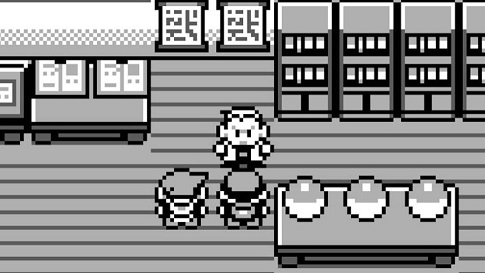
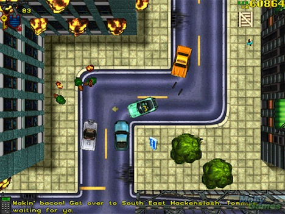
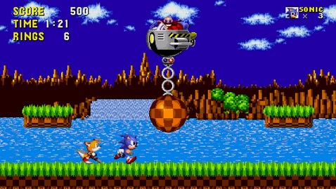
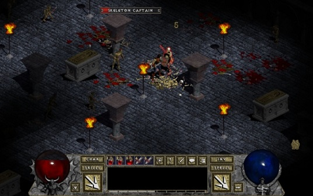

This generation of games ulitilized a graphic style called 2D which used
two-dimensional bitmap graphics. This graphic style uses many tiny parts, called
pixels, which are often different colors, to create images on the screen.
this allowed developers to create large and complex game worlds more efficiently.
The assets of the game would be separated with the world comprised of tiles and
everything else made as sprites, both of which would be reused repeadtly.
Top-Down Games

Also known as overhead view, is a type of 2D game which has a camera
angle that shows the character and the area around from above. Many early games
adopted this visual style, especially war games and construction/management games.
Some popular examples of this style include SimCity, Pokemon, Tycoon Franchise,
The Legend of Zelda, and Grand Theft Auto.
Side-Scrolling

types of games were 2D games with the viewpoint taken from the side
and either the sprites moved from side to side or the background was made to look like
it was moving. These types of games used schrolling computer display technology and
parallax scrolling to suggest added depth. Many games used this perspective style and
other graphical technologies to give their individual games a different feeling and play style
than the other games in the market.
Some popular examples of games that used this style include Sonic the Hedgehog, Double Dragon,
Battle Toads, R-Type, Super Mario Bros., and many others.
2.5D

Also known as pseudo-3D graphics, is a 2D graphic style that would "fake"
three-dimensionality. This was done by using multiple different techniques that would
use a fixed point of view but would also reveal different facets of an object. Some
techniques programmers would use to achieve this pseudo 3D style include oblique projection,
isometric/axonometric projection, billboading, parallax scrolling, scaling, skyboxes,
and skydomes.
Some famous games that used this graphic style include The Sims, Diablo, Half-Life 2,
Final Fantasy Tactics, Doom, Street Fighter II, and many others.